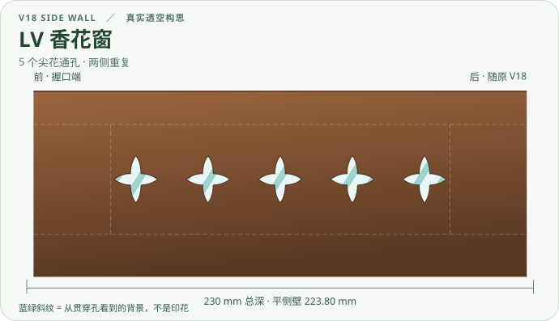
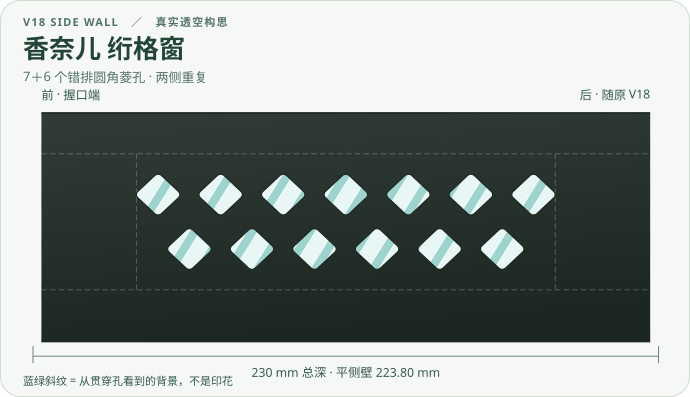
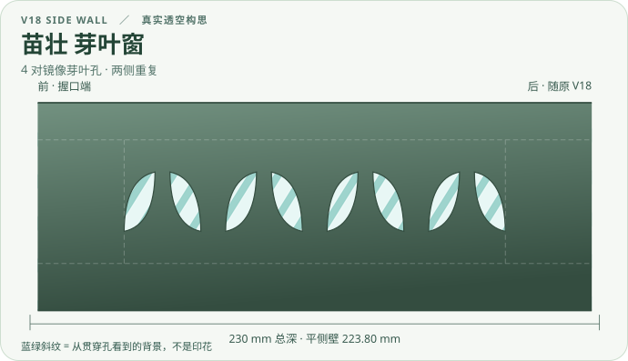
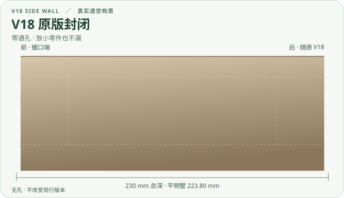

借用旧 LV 尖花外轮廓，不切字母，不保留会掉落的中心孤岛。
两侧优先开贯穿窗。蓝绿斜条是孔后背景示意，不是印上去的图。默认 V18 素面、STEP 和 3MF 保持原样。A 叶脉、B 波浪握口、C 画框窗已出单独 STEP，查看对比及下载。

借用旧 LV 尖花外轮廓，不切字母，不保留会掉落的中心孤岛。

用圆角菱孔表现绗格。孔与孔保留连筋；原双 C 如需保留，可另放不挖孔的前脸。

提取芽叶构图，不把原标志整体挖掉。每组中间留下完整竖筋；立方体标记可留在前脸。

原版仍是当前默认打印件。保留四面挡板，用于螺丝、卡扣等小件。
这是 2D 正交侧视。孔形及比例可调；前脸可另外设计，但本预览不出前板通孔。整屉长宽高请用原有的 3D 规划工具。换孔形不会移动导轨、握口或前后定位。
原侧壁实测 CAD 厚 0.96 mm。示意的切孔只放在 Y38–192、Z19–65 mm 带内。留整条底沿、顶沿、前后角柱、挡边、后定位与滑动区；不挖底板。
原前板 CAD 厚 2.70 mm，握口 43.60 mm。若需要连贯纹样，另画握口下方的少量窗，不预设为默认，也不切后署名及挡片。
镂空只适合不会掉出孔的大物。需先样件验证薄壁、桥接、孔边连筋、抗变形和装配。图中连筋阈值只是布置筛选，不是最低安全厚度。
面积只按画出来的二维贯穿轮廓粗估；双侧名义去料体积以 0.96 mm 同厚侧壁计算，不是切片重量或结构认证。